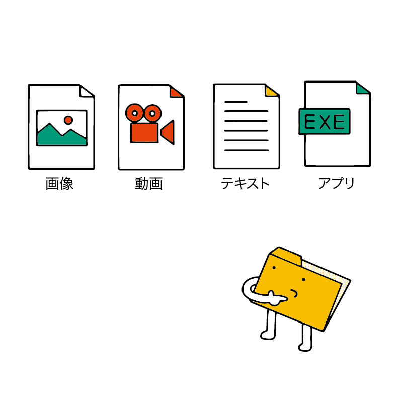
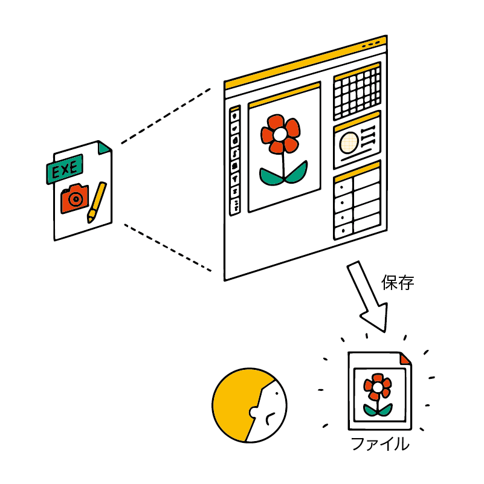
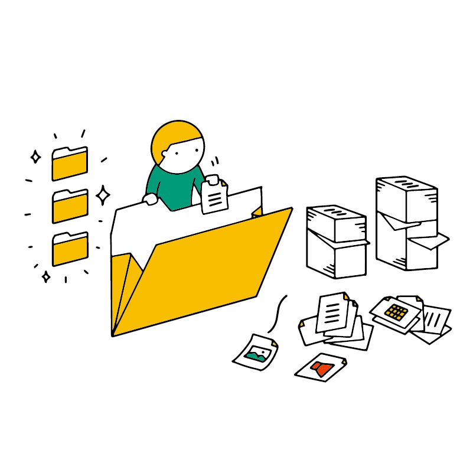

ファイル・フォルダ操作に慣れよう（基本編）
ファイルやフォルダの操作に慣れることが「パソコンに強くなる」第一歩だと言っても過言ではないでしょう。
ファイルとは？
アプリで作成・保存した書類や画像、動画などのデータはすべて ファイル という、ひとまとまりのデータになって保存されます。
また、アプリ自体も複数のファイルで構成されています。
ファイルを作成してみよう
実際にファイルを作成してみましょう。
ここではちょっとした文章をファイルとして記録してみます。
スタートメニューから「メモ帳」を開いてください。
メモ帳に好きな文を書いてみましょう。なお、パソコンで文章を書くことを「入力」といいます。
特に文が思いつかない場合、「ファイル操作の練習をします」などと入力してみてください。
ファイル メニューをクリックし、名前を付けて保存 をクリックします。
すると、いま「メモ帳」で作成したデータの保存先を選ぶ画面が表示されます。
保存先が表示されない場合は「フォルダーの参照」をクリックしてください。
左側の欄で ドキュメント をクリックしてください。
ドキュメントとは「書類」という意味です。
保存先が ドキュメント に切り替わったら、ファイル名 の欄に「ファイルの練習」と入力して 保存 ボタンをクリックしましょう。
保存ウィンドウが閉じられ、メモ帳アプリのタイトルバーが「ファイルの練習」となりました。
では、もう少しこのファイルの内容を変更してみましょう。
なにか好きな文章を書き加えてください。思いつかない場合、「保存をしてみました。」などと入力してみてください。
変更した内容を保存しましょう。 ファイル から 上書き保存 をクリックしてください。
すると、先程保存したファイルに編集した内容が書き加えられます。
「上書き保存」では、今開いているファイルに書き込んだ内容を加えて保存します。したがって、新しくファイルは作成されません。
「名前を付けて保存」では、書き込んだ内容を別の新しいファイルとして保存します。したがって、新しくファイルが作成されます。
上書き保存をしたら、メモ帳を終了しましょう。
メモ帳ウィンドウ右上の 閉じる ボタンをクリックしてください。
なお、保存せずにアプリを閉じたり、パソコンの電源を切るとデータが消えてしまいます。
きちんと保存してから閉じるようにしましょう。
ファイルを開こう
保存したファイルは開くことができます。
これにより、一度作業を終了したファイルを後日編集できます。また、他の人から送られてきたデータを開くこともできます。
メモ帳から開く
メモ帳を起動しましょう。
ファイルから開くをクリックしましょう。
ドキュメントをクリックしてください。
先ほど保存した「ファイルの練習」をクリックし、開くをクリックしましょう。
すると、先ほど作成した文章がメモ帳で開かれます。
確認できたらメモ帳を閉じましょう。
保存された場所から開く
ファイルを保存された場所から開くこともできます。
先ほどのファイルは「ドキュメント」という場所に保存したはずです。
では、「ドキュメント」という保存場所を開きましょう。「エクスプローラー」というアプリを開きます。
タスクバーにある以下のアイコンを探してクリックしてください。
「よく使用するフォルダ」などが表示されたアプリが立ち上がります。「エクスプローラー」はファイルを管理するためのアプリです。
ドキュメントをダブルクリックしましょう。
先ほど保存した「ファイルの練習」というファイルがあるはずです。これをダブルクリックしましょう。
無事にメモ帳で開けたはずです。
フォルダとは？
ファイルが増えてくると管理が大変になるので、種類や目的などによって分類することをおすすめします。
たとえば、学生の方なら数学や英語といった科目別のフォルダを作ると管理しやすくなるでしょう。
//TODO 学生を想定した実際のフォルダ構成例を示してみる
実は、ここまでで使用してきた「ドキュメント」もフォルダの一種です。
Windows には最初から以下のようなフォルダが作られています。
- ドキュメント（書類用）
- ダウンロード（ネットからダウンロードしたファイル用）
- ビデオ
- ピクチャ（画像用）
- ミュージック
フォルダを作成してみよう
では、フォルダを作成しましょう。
ここでは、ドキュメントの中に新しく自分でフォルダを作ります。
エクスプローラーからドキュメントを開きましょう。
ドキュメントで何もない部分を右クリックし、新規作成のフォルダーをクリックします。
新しいフォルダという名前でフォルダが作成されます。ここで「勉強」と入力し、Enterキーを押しましょう。
もし入力を終える前に別のところをクリックすると、フォルダ名が「新しいフォルダー」のまま確定されてしまいます。
そのときは「新しいフォルダー」を右クリックして、名前の変更をクリックすることで、再びフォルダー名を入力する画面にできます。
フォルダの中にフォルダを作成する
//TODO 説明イラスト: フォルダが入れ子になっており、その中にファイルが入っている様子
フォルダの中にフォルダを作り、更にフォルダを整理することもできます。
先ほどの「勉強」フォルダを開きましょう。「勉強」フォルダをダブルクリックします。
「ドキュメント」の中に「勉強」フォルダを作ったときと同じように、何もない部分を右クリックし、新規作成のフォルダをクリックします。
新しいフォルダという名前でフォルダが作成されます。ここで「パソコン」と入力し、Enterキーを押しましょう。
新しく作成した「パソコン」フォルダをダブルクリックし、「パソコン」フォルダを開きます。
別のフォルダを開く
ここまで手順通りに進めてきた場合、「ドキュメント」の中にある「勉強」の中にある「パソコン」フォルダを開いているはずです。
ちょっとややこしくなってきましたね。
フォルダの中で迷子にならないために、エクスプローラーの機能を使ってどこを開いているのか確認しましょう。
エクスプローラーの上部に PC > ドキュメント > 勉強 > パソコン という表示がありますが、これが現在表示しているフォルダです。この表示部分をアドレスバーといいます。
PC > ドキュメント は「PC の中に ドキュメント というフォルダがある」という意味です。同様に ドキュメント > 勉強 は「ドキュメントの中に 勉強 というフォルダがある」という意味です。
ここに表示されているフォルダ名クリックすることで、上の階層にあるフォルダに移動できます。
では 勉強をクリックしてみましょう。
「パソコン」フォルダを抜けて 「勉強」フォルダが表示されます。続いて、ドキュメント をクリックしてみましょう。
「ドキュメント」フォルダが表示されたはずです。
ファイルをフォルダに入れる
先ほど作ったフォルダを活用していきましょう。
すでにあるファイルを移動する
ドキュメントフォルダにある「ファイルの練習」を、「パソコン」フォルダに移動します。
「ファイルの練習」を右クリックして 切り取り をクリックします。
「勉強」フォルダをダブルクリックして開きます。続いて、「パソコン」フォルダをダブルクリックして開きます。
「パソコン」フォルダを開いたら、何もない部分で右クリックして 貼り付け をクリックします。
これでファイルが移動できました。
なお、ファイルだけではなく、フォルダも切り取りを使うことで移動できます。フォルダを移動する場合は中に入っているファイルも一緒に移動します。
保存する段階でフォルダを指定する
ファイルを保存する段階でフォルダを指定することもできます。
メモ帳を起動し、適当な文章を入力しましょう。思いつかない場合は「保存の練習」などと入力してください。
ファイル から 名前を付けて保存 をクリックしましょう。
左側の ドキュメント をクリックし、勉強 フォルダをダブルクリックしましょう。
パソコン フォルダをダブルクリックします。
ファイル名の欄に「保存の練習」と入力し、保存をクリックします。
これで「パソコン」フォルダにファイルが保存されました。
メモ帳は閉じて構いません。
ファイルやフォルダを削除する
不要になったファイルは削除できます。
エクスプローラーで「パソコン」フォルダを表示させましょう。
先ほど作成した「保存の練習」ファイルを削除してみましょう。
「保存の練習」ファイルを右クリックし、削除をクリックします。
削除され、フォルダから「保存の練習」ファイルが消えました。
ただし、この状態は完全に削除されたわけではなく、「ごみ箱」という特殊なフォルダに移動された状態です。
デスクトップに戻り、ごみ箱をダブルクリックします。
ごみ箱が表示されたら、画面上部にある ごみ箱ツール をクリックします。
ここで ごみ箱を空にする をクリックします。
完全に削除してよいか尋ねる画面が表示されたら、「はい」をクリックします。これで、ごみ箱に入っているファイルが完全に消去されます。
ごみ箱に移動しただけの状態では、ファイルが削除されたと言えません。簡単に復元（元の場所に戻すこと）ができてしまいます。
ごみ箱に入れるだけではなく、完全に削除することを忘れないようにしましょう。
ドライブ
ファイルやフォルダは ストレージ（ハードディスク や SSD） に保存されています。
Windows 上でストレージは ドライブ として扱われます。
//TODO 説明イラスト
エクスプローラーを開き、画面の左側にある「PC」をクリックしましょう。
//TODO ここが一括置換で「パソコン」になっていたら変なので要チェック
デバイスとドライブ という欄に Windows(C:) というアイコンが確認できます。これが ドライブ です。
原則として 1 つのストレージが 1 つのドライブとして扱われ、ファイルやフォルダは、このドライブの中に保存されています。
C: というのはドライブに割り当てられた文字（ドライブレター）です。標準的な Windows の場合は C ドライブにアプリやファイルが保存されています。
パソコンによっては D: や E: といったドライブが存在していることもあります。
Windows(C:) をダブルクリックすると、英語で書かれたフォルダが並んでいることがわかります。実は「ドキュメント」もこの中に保存されています。
ただし、慣れないうちに C ドライブを直接操作するのはトラブルの元になるので、慣れるまでは「ドキュメント」や「ピクチャ」などといったフォルダだけを操作することを強くおすすめします。
//TODO 説明イラスト: ツリー構造（Cドライブの中にドキュメントやピクチャ、システムファイルなどが入っている）
Windows パソコンのドライブレターは「C ドライブ」から始まります。2つ以上のドライブがある場合は D, E, F...となり、 Aドライブ や B ドライブは使われません。
これは現在の Windows パソコンの先祖のような古いパソコンが フロッピーディスクドライブ という、当時使われていた記録装置を A ドライブ と B ドライブ として認識していたためです。これらと重複しないように C ドライブから始まるようになり、フロッピーディスクドライブが使われなくなった今でも C ドライブから始まるようになっています。
ドライブの使い分け
パソコンによっては「Windows のシステム自体を C ドライブに、データ保存を D ドライブに」のように、複数のストレージを搭載していることがあります。ドライブが 2 つ以上あるパソコンをお使いの場合は D などのドライブを使い分けるのも良いでしょう。
まとめ
- ファイルとは、ひとまとまりのデータのこと。
- アプリから保存したデータはファイルになる。
- アプリもファイルで構成されている。
- メモ帳などのアプリで、「名前をつけて保存」することでファイルを保存できる。
- 2回目以降の場合、「上書き保存」が利用できる。
- フォルダとは、ファイルを整理するためのもの。
- ファイルの種類や目的に応じて、フォルダに分けて保存する。
- Windows には、「ドキュメント」や「ダウンロード」などのフォルダが最初から用意されている。
- エクスプローラーというアプリでファイルやフォルダを管理できる。
- 不要になったファイルやフォルダは削除できる。
- 削除すると、1 回「ごみ箱」という特殊なフォルダに移動する。そこで「ごみ箱を空にする」操作をするまでは完全には削除されない。
- Windows において、ストレージは「ドライブ」と表現される。
- ファイルやフォルダはこのドライブ上に保存されている。